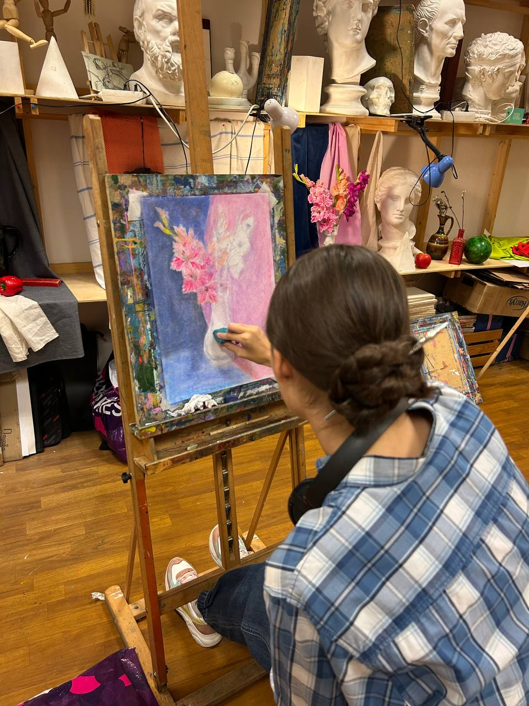
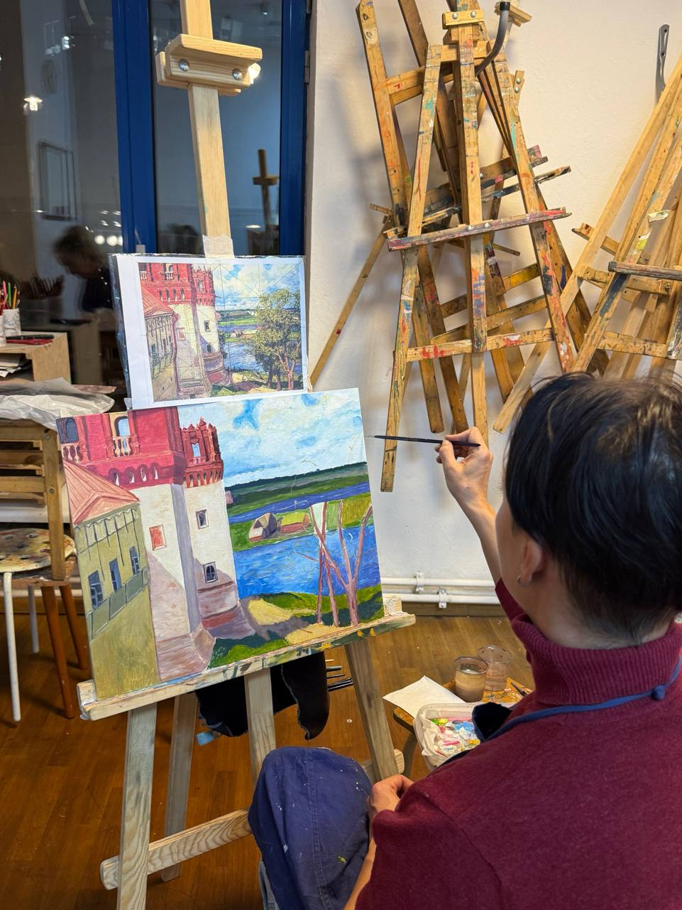

01
01Базовый курс
Научитесь рисовать объёмно что угодно. Вся база рисования — без занудных заданий: нескучные натюрморты, пейзажи, построение, тон, цвет и композиция.
попробовать бесплатно →
творческая мастерская «баня» · 14+
для взрослых и подростков в Москве
Объясняем правила рисования понятными словами, без занудства, чтобы вы смогли нарисовать всё, что захотите.
Записаться на бесплатное пробное012 филиала в Москве
02для подростков от 14 лет и взрослых
03единый абонемент на все направления
04программа и расписание под ваши интересы
рисование как пространство для себя

 без оценок
без оценокЧтобы начать, не нужно уметь рисовать — большинство учеников приходят с нуля
Мы не оцениваем и не сравниваем: каждый рисует в своём темпе
Объясняем законы рисунка, композиции и колористики простым языком и без лишней теории
К нам приходят расслабиться после работы и учёбы
Вечерние группы и занятия в выходные легко встроить в плотный график
Отмечаем в абонементе только те занятия, которые вы посетили
Ездим на пленэры, ходим вместе в музеи и участвуем в выставках
Учим наблюдать, замечать, вдохновляться и придумывать. Начать рисовать может каждый — в любом возрасте.
выбирайте или сочетайте
01Научитесь рисовать объёмно что угодно. Вся база рисования — без занудных заданий: нескучные натюрморты, пейзажи, построение, тон, цвет и композиция.
попробовать бесплатно → 02
02Научитесь рисовать портрет пропорциональным и объёмным, узнаете, что влияет на похожесть, и изучите анатомию лица в разных ракурсах.
попробовать бесплатно →
03Изучите особенности пейзажа, научитесь создавать объём и глубину с помощью воздушной перспективы, передавать погоду и настроение.
попробовать бесплатно →04Изучите особенности выбранного материала и научитесь им управлять: освоите техники, смешивание красок и подбор цвета.
попробовать бесплатно →Не нашли подходящий курс? Составим индивидуальный план занятий под вас, ваши интересы и творческие запросы.
попробовать бесплатно →первый шаг — бесплатно
Оставьте телефон — администратор свяжется с вами и подберёт удобную группу.
говорят взрослые ученики
«Мне нравится заниматься в студии «Баня». Благодаря занятиям у меня появилась надежда осуществить мечту — научиться чувствовать пространство и выражать идеи на бумаге.»
«Очень нравятся занятия для взрослых. Была у трёх разных преподавателей — все замечательные. Радостно видеть, как много взрослых обращаются к искусству.»
«Невероятное место. Здесь всегда комфортно, можно полностью сконцентрироваться на работе и на время забыть обо всех проблемах и заботах.»
знакомимся без стресса
Выбираете удобное время
Администратор подбирает группу по уровню и целям
Знакомитесь с педагогом, рассказываете о запросах и рисуете простой натюрморт с подробными объяснениями
Преподаватель помогает выбрать направление и подсказывает, с чего начать
Если мы подходим друг другу, выбираете абонемент и становитесь частью творческого сообщества
никаких скучных постановок
Работаем с натуры, пробуем разные материалы, обсуждаем идеи и постепенно собираем собственный художественный язык.
здесь можно пробовать, ошибаться и находить своё ↓
единый абонемент
5 недель
от 8 800 ₽выбрать2,5 месяца
от 16 800 ₽выбрать5 месяцев
от 28 900 ₽выбрать7 месяцев
от 44 000 ₽выбратьТочная стоимость зависит от направления. Актуальные цены сверены с сайтом мастерской; администратор уточнит вариант для вашей программы.
остались вопросы?
спросить не страшно
Точно не поздно. Мы работаем со взрослыми любого возраста и подбираем задания под ваш темп, опыт и интересы. Начать можно в любое время года.
Нет. Рисование — это система понятных навыков: видеть пропорции, тон, цвет и пространство. Мы последовательно объясняем каждый из них и закрепляем на практике.
Да. Большинство учеников приходят с нуля. Для старта рекомендуем базовый курс: он даёт опору в построении, тоне, цвете и композиции.
Да. Есть вечерние группы и занятия в выходные. Можно выбирать удобные дни, а из абонемента списываются только посещённые занятия.
Эта страница — для тех, кто хочет рисовать для себя. Подготовка к поступлению идёт по отдельной программе с портфолио и экзаменационными задачами.
На пробное занятие ничего покупать не нужно. После выбора направления преподаватель даст короткий список материалов и поможет подобрать их без лишних расходов.
Предупредите администратора заранее. Пока действует абонемент, пропущенное занятие не списывается. При необходимости срок можно продлить заморозкой.